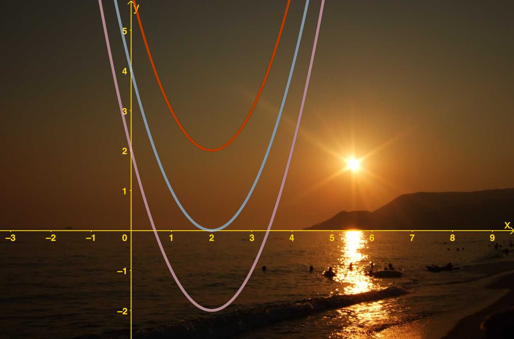

Antall løsninger til andregradslikninger
Antall løsninger til andregradslikninger¶
Du har så langt lært å løse andregradslikninger ved å bruke abc-formelen. Du har kanskje oppdaget at andregradslikninger kan ha to, én eller ingen løsning.
Målet nå er at du skal
kunne drøfte antall løsninger til en likning
kunne avgjøre betingelser på tallene \(a\), \(b\) og \(c\) som gjør at likningen
har to, én eller ingen løsning
kunne lage et program i Python som gir riktige antall løsninger (og løsningene)

Oppgave 1
Løs likningene ved regning
\(x^2+2x+1=0\)
\(x^2+2x+2=0\)
Greide du å løse oppgavene? Begge likninger var litt spesielle. I denne videoen ser vi mer på dem og forklarer hvorfor.
Oppgave 2
Vi skal nå se på følgende likning:
Her er\( k\) et tall.
Dersom \(k = 0\) ser vi at likningen ikke har noen løsning, siden vi da får \(x^2 = -4\).
For hvilke verdier av \(k\) har likningen
to løsninger
nøyaktig én løsning
ingen løsninger